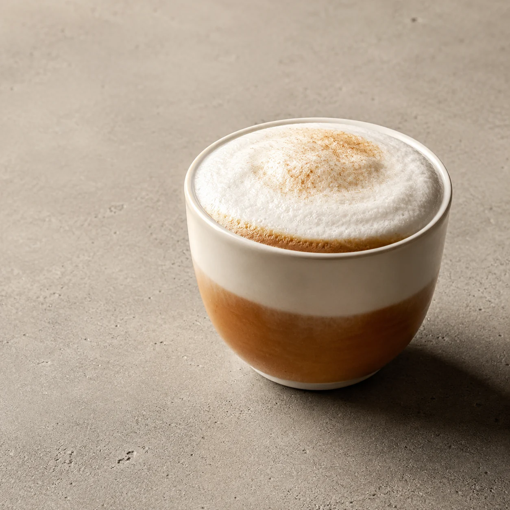
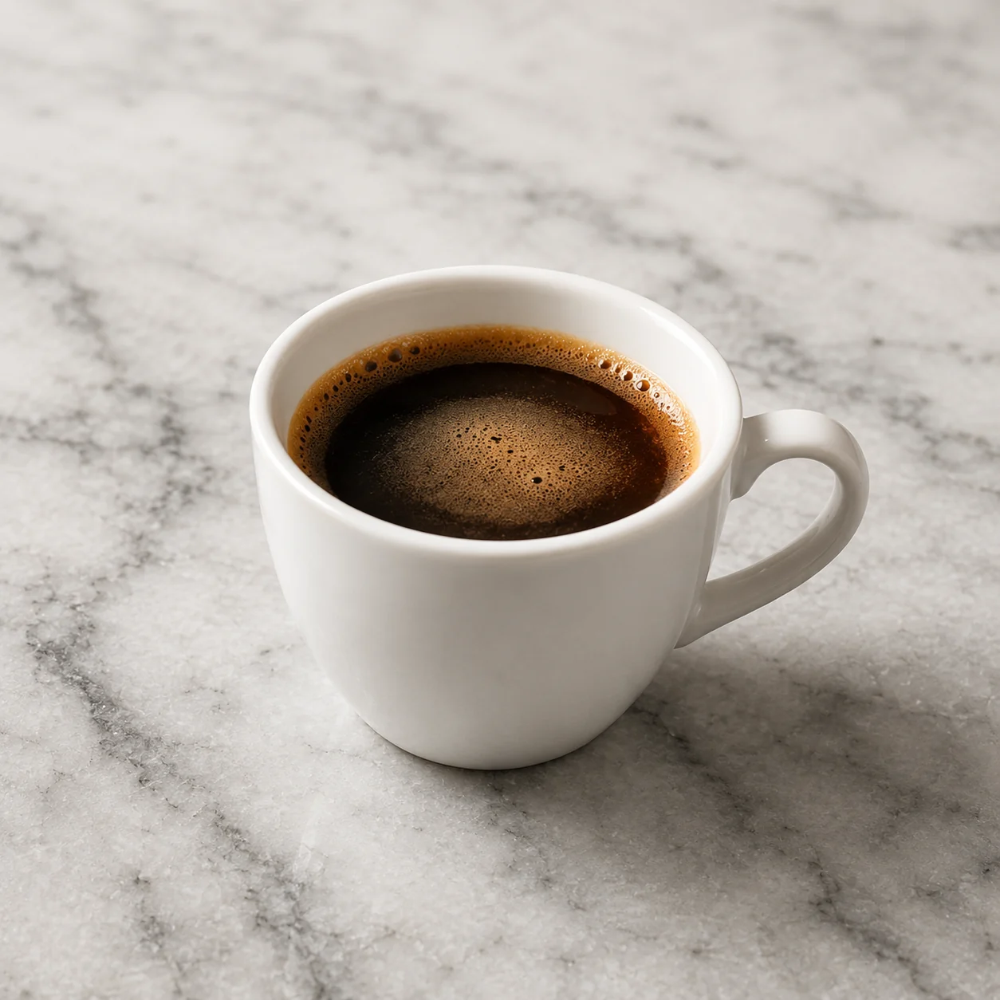
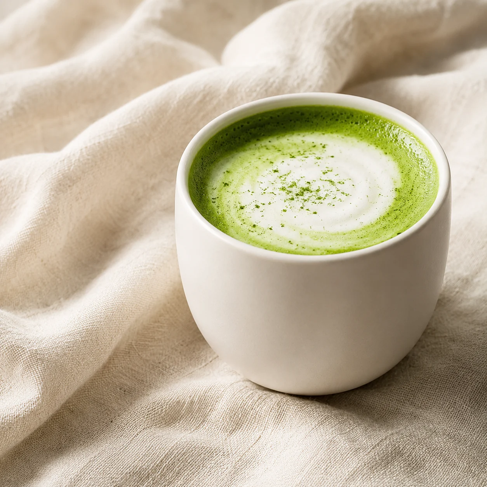
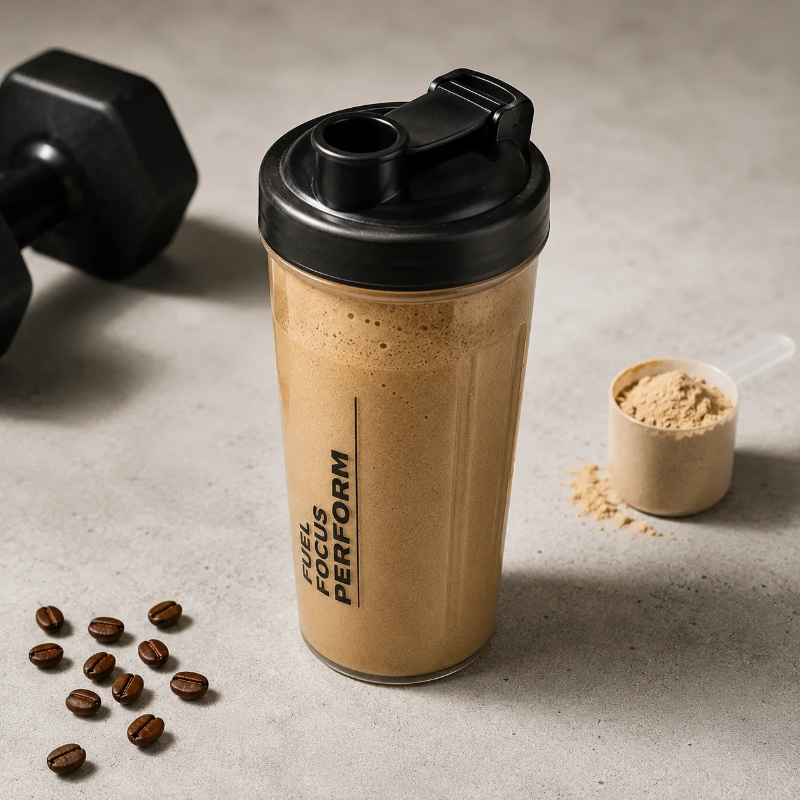
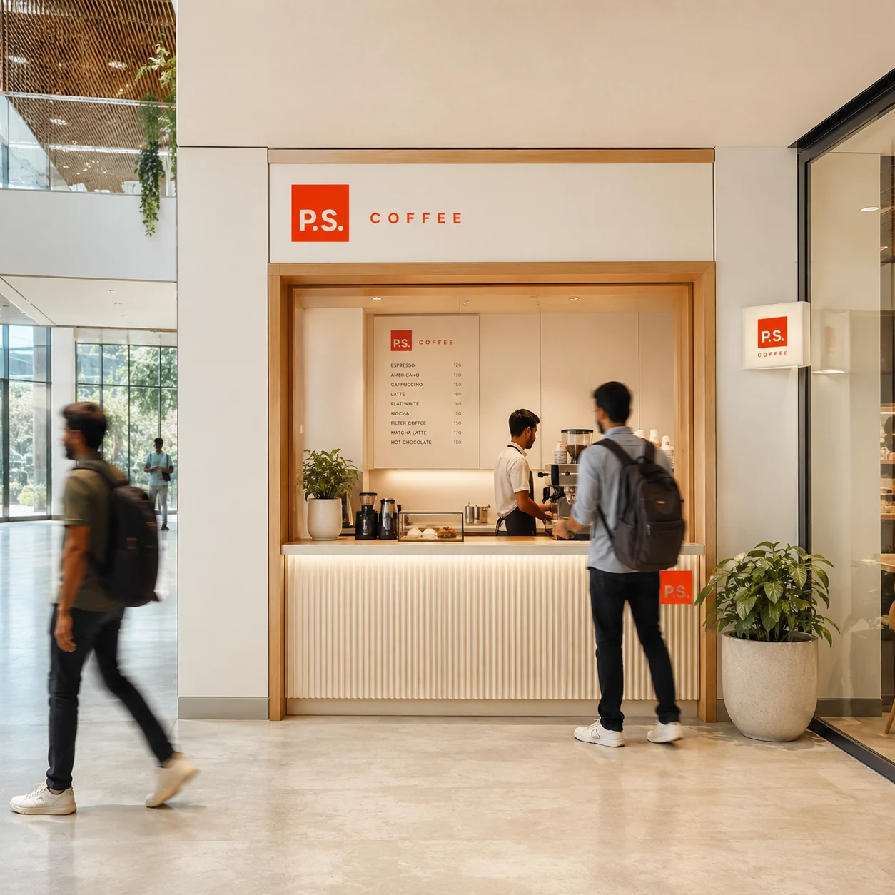

TO YOUR EVERYDAYAHMEDABAD, FIRST.
A BRAND IN THE MAKING.THE LETTER IS LIVE ↗
KEEP READING BELOW
Dear ordinary day,
थोड़ा ठहरो।The day is
the letter.
The coffee
is the P.S.
Honest specialty coffee.
From Pods planned in and around your day.
We take coffee very seriously, as well as the drama.
थोड़ा ड्रामा तो बनता है।
FIG. 01 / THE EVERYDAY CUPA different kind of day.Yours, P.S.
The meeting.
The missed alarm.
The one more thing.
Your day already has a plot.
We are making a little room
for the part you look forward to.
Your usual.
With something
behind it.
Four familiar starting points. A changing range behind them. Specialty coffee that can become part of the everyday.
Meet the menuTHE COFFEE
Four families.
Your kind of familiar.
The Letter is the familiar four.
The P.S. is the changing range behind them.
Start anywhere. Stay curious.

Americano.
The familiar beginning.

Cappuccino.
A softer landing.

Hot Matcha Latte.
A change of pace.

Protein Cold Coffee.
Keep the day moving.
There is more
after the familiar.
Explore the existing recipes and numbered variants across Black, White, Green and Strong. The opening range is still taking shape.
Explore The P.S. ↗A SMALL STOP / THEN ON WITH IT
Grab.
Go.
Good day.
Specialty coffee, made for the way your day moves. Our Pods are being designed around a simple idea: pick up your cup and carry on.
- Step up.
- Pick up.
- Carry on.
A coffee stop.
Not a change of plans.
THE PLACE
In the middle
of your day.
A Pod is our compact coffee format. We are exploring workplaces, campuses, gyms and nearby corners. Ahmedabad first.
Tell us where you would like a Pod ↗
FROM THE FIRST LIGHT / TO THE LAST LETTER
The day changes.
So can your cup.
A coffee kind of morning.
A matcha kind of evening.
Two moods. Your own rhythm.
Hello, day.
Find your coffee ↗DUSK / P.S. GREENA greener turn.
Meet P.S. Green ↗A DIFFERENT SHADE OF EVERYDAY
As the light softens,
the story turns green.
Precisely whisked matcha. A familiar latte and more to discover in P.S. Green.
Explore the matcha chapter ↗Coffee and matcha both contain caffeine. Choose your own time.THE NEXT CHAPTER
A little less
between you
and your usual.
The P.S. App is being planned around finding a Pod, exploring the current slate and choosing a pick-up time when we open.
Inside the app prototype ↗PROTOTYPE / NOT YET AVAILABLE TO DOWNLOAD

THE LETTER IS STILL BEING WRITTEN.
Be part of
the first chapter.
Hear when the first Pod takes shape.
Opening updates, straight from P.S.